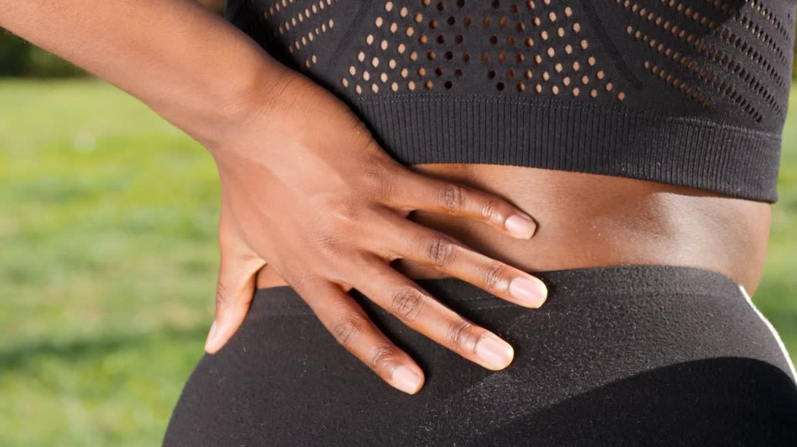

You're stopped in traffic on I-205, foot on the brake, and the car behind you doesn't stop. The seat belt locks, your torso gets held, and everything below your ribs takes a jolt it never planned for.
Low-back pain after a crash is nearly as common as neck pain, and it gets less attention.
Why the lower back takes a hit
Your pelvis is anchored to the seat and your upper body is restrained by the belt. When the car stops or gets shoved, the low back, caught between the two, gets twisted and compressed. Muscles strain. Ligaments stretch. The joints in the spine can get irritated, and the discs between the bones can take a hit too.
You don't have to be in a big crash for this to happen. A parking-lot bump can do it, especially if you were turned to look over your shoulder when it hit.
What it can feel like
- A deep, dull ache across the belt line that gets worse after sitting
- Sharp pain when you bend, twist, or stand up from a chair
- Stiffness first thing in the morning
- Pain that travels into the buttock or down the leg, sometimes with tingling
- One side that feels tighter, or hips that feel "off"
Pain that runs down a leg is often what people call sciatica. It can come from irritation of a nerve root in the low back, and it's worth having examined rather than guessing.
Why it can show up late
Like neck injuries, low-back strain often doesn't announce itself at the scene. Adrenaline hides it, then it swells and tightens overnight. Many people notice it first on the second or third morning, when getting out of bed is suddenly a project. We cover the reasons in why pain shows up days after a car accident.
Why sitting is the hard part
For many people with a sore low back, sitting is worse than standing or walking, because it loads the lower spine and lets the hip muscles tighten up. Driving adds hours of it, plus vibration. The end of a long drive is a common time for a back to flare. If you commute from Oregon City or Milwaukie into Portland, that's worth mentioning at your exam, since it tells us what your back deals with every day.
The hips and pelvis matter too. A crash can leave the joints in the pelvis irritated and the hip muscles guarded, and low-back pain often turns out to involve more than the lumbar spine alone.
How chiropractic care may help
After an exam, which includes how your spine moves, which movements hurt, and whether a nerve seems involved, a plan might include a few things working together:
Gentle adjustments for joints that have stopped moving well. Lumbar traction or spinal decompression when a disc seems to be part of the picture, to ease pressure by gently stretching the spine. And rehab exercises to rebuild the core and hip muscles that support the low back. Not everyone needs all of it, and nobody can promise a result. The exam decides.
Lifting and bending while it heals
Bend from the hips and knees, keep whatever you're carrying close to your body, and avoid twisting while you hold something heavy. Take the groceries in two trips. It's not glamorous, but it spares a back that's already irritated.
What to do between now and your visit
Keep moving, gently. Walk. Avoid sitting for hours without a break, which is hard if you commute, but stand up and shift whenever you can. Skip the heavy lifting. Heat feels good to many people, though it's not a cure.
We bill PIP directly for auto injury patients from Milwaukie, Gladstone, Oak Grove, and Portland. Our auto injury page explains how it works. If you want to understand more about the therapies, our guide on how traction, decompression, and rehab fit together is a good next read.
Back still talking to you?
Let's find out why. Book an exam and we'll go from there, with PIP billed directly.